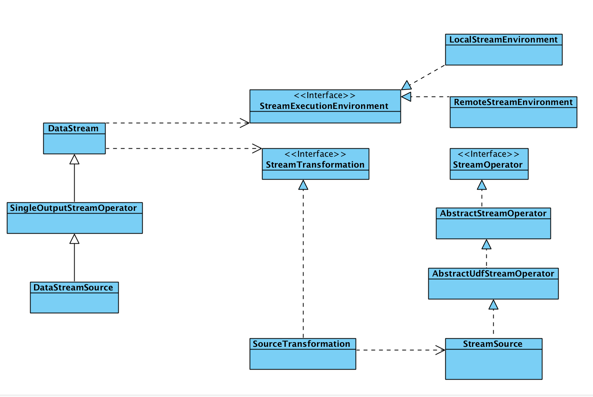

Flink job 的流程
As we knonw ,Flink 编写代码的一共就分为三步
- 定义 source 数据源
- 对source 进行操作(map,fliter,flatmap process etc)
- 定义一个sink,数据处理完结果输出地
当然这仅仅是一个大体主要的流程,还有一些去其他配置这里就忽略掉了
定义完所有操作过后,他会生成一个DAG,然后部署到集群进行运行
从一个例子开始
从flink 与代码里面example 样例找的一个
public static void main(String[] args) throws Exception { // Checking input parameters final ParameterTool params = ParameterTool.fromArgs(args); System.out.println("Usage: TwitterExample [--output <path>] " + "[--twitter-source.consumerKey <key> --twitter-source.consumerSecret <secret> --twitter-source.token <token> --twitter-source.tokenSecret <tokenSecret>]"); // set up the execution environment StreamExecutionEnvironment env = StreamExecutionEnvironment.getExecutionEnvironment(); // make parameters available in the web interface env.getConfig().setGlobalJobParameters(params); env.setParallelism(params.getInt("parallelism", 1)); // get input data DataStream<String> streamSource; if (params.has(TwitterSource.CONSUMER_KEY) && params.has(TwitterSource.CONSUMER_SECRET) && params.has(TwitterSource.TOKEN) && params.has(TwitterSource.TOKEN_SECRET) ) { streamSource = env.addSource(new TwitterSource(params.getProperties())); } else { System.out.println("Executing TwitterStream example with default props."); System.out.println("Use --twitter-source.consumerKey <key> --twitter-source.consumerSecret <secret> " + "--twitter-source.token <token> --twitter-source.tokenSecret <tokenSecret> specify the authentication info."); // get default test text data streamSource = env.fromElements(TwitterExampleData.TEXTS); } DataStream<Tuple2<String, Integer>> tweets = streamSource // selecting English tweets and splitting to (word, 1) .flatMap(new SelectEnglishAndTokenizeFlatMap()) // group by words and sum their occurrences .keyBy(0).sum(1); // emit result if (params.has("output")) { tweets.writeAsText(params.get("output")); } else { System.out.println("Printing result to stdout. Use --output to specify output path."); tweets.print(); } // execute program env.execute("Twitter Streaming Example"); }
|
他的步骤如下
前面的配置项我们暂时可以忽略
主要看怎么添加source ,operator 怎么转换的,sink 怎么添加的,最后怎么生产的DAG 的
环境变量StreamExecutionEnvironment
StreamExecutionEnvironment 是一个抽象的class
定义了一些addSource fromCollection 基本跟怎么获取一个source 有关的方法,以及一些类型
他的主要子类有 RemoteStreamEnvironment LocalStreamEnvironment 这里的区别就是Local 就是用于在直接启动一个job,remote 就是在生产环境,提交一个job ,这个有可能是yarn 的资源调度
根据我们的例子,我们主要看一下他的addSource 方法
public <OUT> DataStreamSource<OUT> addSource(SourceFunction<OUT> function, String sourceName, TypeInformation<OUT> typeInfo) { if (typeInfo == null) { if (function instanceof ResultTypeQueryable) { typeInfo = ((ResultTypeQueryable<OUT>) function).getProducedType(); } else { try { typeInfo = TypeExtractor.createTypeInfo( SourceFunction.class, function.getClass(), 0, null, null); } catch (final InvalidTypesException e) { typeInfo = (TypeInformation<OUT>) new MissingTypeInfo(sourceName, e); } } } boolean isParallel = function instanceof ParallelSourceFunction; clean(function); StreamSource<OUT, ?> sourceOperator; if (function instanceof StoppableFunction) { sourceOperator = new StoppableStreamSource<>(cast2StoppableSourceFunction(function)); } else { sourceOperator = new StreamSource<>(function); } return new DataStreamSource<>(this, typeInfo, sourceOperator, isParallel, sourceName); }
|
主要步骤
- type info 类型的初始化
- 并行度的设置
- 构造一个StreamSource
- 最后生成一个 DataStreamSource
###StreamSource
StreamSource 继承AbstractUdfStreamOperator 同时实现了StreamOperator ,然AbstractUdfStreamOperator 继承AbstractStreamOperator ,AbstractStreamOperator 实现了StreamOperator
StreamOperator 主要是一些生命周期的方法,状态 快照的一些更新 存储
public class StreamSource<OUT, SRC extends SourceFunction<OUT>> extends AbstractUdfStreamOperator<OUT, SRC> implements StreamOperator<OUT>
|
###DataStreamSource
DataStreamSource 继承 SingleOutputStreamOperator ,SingleOutputStreamOperator 继承DataStream,DataStream 就是所有的operator 的一个抽象,他提供了 flatMap,map
,filter etc,不过 DataStream 依赖于StreamExecutionEnvironment StreamTransformation
整体的类图

DataStream 与StreamOperator 中间通过StreamTransformation 进行一个桥接
可以这样理解,DataStream 是一个具体的数据流,StreamOperator 是在这个流上进行一个操作,比如map ,filter 这样的
DataStream 具体的operator
例子中的DataStream 的 flatMap(new SelectEnglishAndTokenizeFlatMap())
进入flatMap
public <R> SingleOutputStreamOperator<R> flatMap(FlatMapFunction<T, R> flatMapper) { TypeInformation<R> outType = TypeExtractor.getFlatMapReturnTypes(clean(flatMapper), getType(), Utils.getCallLocationName(), true); return transform("Flat Map", outType, new StreamFlatMap<>(clean(flatMapper))); }
|
生成 out type 生成一个StreamFlatMap,StreamFlatMap 上线了OneInputStreamOperator ,OneInputStreamOperator 继承了 StreamOperator ,所以生产了还是一个 streamOPerator 最后call transform 方法
public <R> SingleOutputStreamOperator<R> transform(String operatorName, TypeInformation<R> outTypeInfo, OneInputStreamOperator<T, R> operator) { // read the output type of the input Transform to coax out errors about MissingTypeInfo transformation.getOutputType(); OneInputTransformation<T, R> resultTransform = new OneInputTransformation<>( this.transformation, operatorName, operator, outTypeInfo, environment.getParallelism()); @SuppressWarnings({ "unchecked", "rawtypes" }) SingleOutputStreamOperator<R> returnStream = new SingleOutputStreamOperator(environment, resultTransform); getExecutionEnvironment().addOperator(resultTransform); return returnStream; }
|
生成一个 resultTransform ,它是一个Transformation,因为OneInputTransformation是Transformation的子类,同时我们new OneInputTransformation 的时候也需要传入了OneInputStreamOperator
在这里 Transformation 与stream operator 联系起来了,然后DataStream 又有一个transformation ,所以 这里就是 DataStream 通过transformation 连接了StreamOperator ,最后调用了 ExecutionEnvironment 的addOperator,将transformation放到 execution env 里面
public void addOperator(StreamTransformation<?> transformation) { Preconditions.checkNotNull(transformation, "transformation must not be null."); this.transformations.add(transformation); }
|
env.execute
最后当我们执行 env.execute 他就会将 env 里面的transformation 生成一个有向无环图DAG …敬请期待